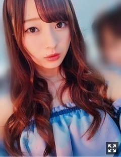
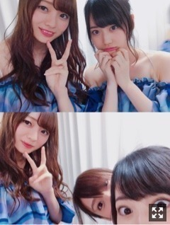
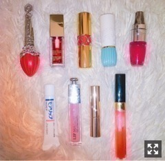
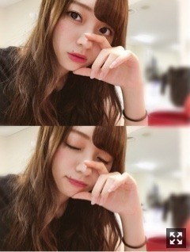

まっくろくろすけ。梅澤美波
みなさまこんにちは！！
乃木坂46 ３期生の
梅澤美波です！！

ミラージュ〜遠くから見たとき〜
衣装めちゃくちゃすきです
８月ももう終盤なのね( .. )
このお仕事していると、
いつも以上に月日が経つのが早くて
びっくりしちゃう( .. )
夏の終わりの秋が近づく頃って
わくわくどきどきしちゃう☺︎☺︎
季節の変わり目の匂いがすき！
わかる人〜☺︎
夏らしいことしてないなあ( .. )
花火したいし花火見たいし
海を見に行きたいしお祭り行きたいし
バーベキューもしたい( ¨̮ )
小さいころは毎日外ではしゃいで
人見知りしない元気っ子だったのに
いつしかこんなに落ち着いてしまった( .. )
全国ツアー、@仙台、@大阪
ありがとうございました！！
仙台は１１日から3日間４公演！
そして大阪は本日で終わりました！
乃木坂46として
色々な場所に足を運ぶ事が出来ていること
とても嬉しく思います。
最高に楽しかったです！
できるだけ、自分のタオルやサイリウムを
持ってくださってる方を見つけようと
広範囲を見渡していたつもりです、
近くまで行けなくても
サイリウムって結構見えてるものだよ☺︎
ありがとうね〜幸せはっぴ〜
たくさん見どころなどなどあるので
来ていただける方にもたのしんでいただけるのではないかな〜と思っております☺︎
まだ愛知新潟も続くので
詳しくは言えないけど、お楽しみに☺︎
先輩方と地方を回るのも
何日間も一緒に過ごさせていただくので
たくさんの刺激を受ける毎日だし、
楽しくて仕方のないツアーです☺︎
物凄く人見知りで、
あまり自分から話したりできないのだけど
もっとお話できるようにと心がけます、頑張る( .. )
人見知り克服したい、、
牛タン毎日たべた、幸せだった( .. )
毎日食べてたのに全然飽きないもう恋しい！！牛タン！！！
大阪では大好きなたこやき！肉まん！アイス！たくさん！幸せ！！
美味しいご飯をありがとうございました☺︎☺︎
あ、一つだけ。
サイリウムとかうちわ持ってる方に
なにかしようかなと思って見てるのに
他のとこ見てる！ってゆうのがたくさんあったの！！
もう！！よそ見するから！！みなみは見てるのに！！
（笑）
仙台、大阪共にホテルは美月とペアで
それぞれ４日間、５日間一緒だったんだけども
なんだか深くまで語ったりした◎
話したあとはいつの間にか美月が寝てるってゆう毎日だった( ¨̮ )
気づいたら寝てるんだもん、ビックリしちゃった☺︎（笑）寝顔も寝方もかわいかったよ（笑）写真撮ったけど見せな〜い（笑）
初めて会った方から受ける第一印象が似ている私達、一緒にいてなんだか落ち着きました、最高に面白いし☺︎
美月は大人だなあと感じた仙台大阪ツアーでしたん、落ち着きペアです、よき◎
ホテルって旅行みたいで楽しくてすき☺︎

そんなやまぴたと☺︎
二人でとってたらお姉さまが入ってきた( ¨̮ )かわいい( .. )
ポジションが全てじゃないってことは
今まで私のファンの方が教えてくださってきたから
身をもって分かっていることです。
ファンの方は
誰がどこにいたって
それが本当に嬉しかった！！
けど、やっぱり上を目指せる人になりたいと思ったの
まあ、私は背が高いし
前に来るとバランスも良くないかもしれないし
後ろの子が見えなくなるとか思うよね
自分でも思うよ〜誰よりも自分が一番感じてる、人に言われなくたって分かってた！
けど、そんな事言ったら
私はどこを目指せばいいのかなって
思っていたずっと、
気にしてたってなにも始まらない何も出来ない、堂々としていたい！
今このシングルで成長できることは
沢山あるはずだし、
ここでたくさん吸収して、学んで、
もっともっとがんばる☺︎☺︎
質問コーナー◎
Q.好きな花は？？
A.かすみ草！金木犀！
Q.最近オススメのリップは？
A.ポールアンドジョーさんの！新しく買ったやつです〜☺︎☺︎
リップとかメイク品、毎回めちゃくちゃ質問いただくから、今回はいつも持ち歩いてるリップ紹介しちゃうね〜

いつも常にカバンに入ってるリップ達です！
多いなあ〜（笑）全部必需品！（笑）リップポーチに入れてます！
コスメの中でもリップコスメが１番すき！
左上から、
◎ジルスチュアート フォーエバージューシーオイルルージュ 02番
◎クラランス コンフォートリップオイル 03番 red berry
◎YSL ルージュ ヴォリュプテ シャイン 57番
◎ポール&ジョー リップスティック N 306番 ブラックチェリー
◎ランコム ジューシーシェイカー 381番
左下から、
◎モアリップ
◎ディオール リップマキシマイザー 001番
◎オペラ リップティント 01番
◎シャネル ブリアンルミエールフリュオマンゴフリュオ 65番
リップは結構入れ替わるし
新しく入ったりも沢山するけど
今のポーチはこんな感じです☺︎
ここのブランドさんのが好きで集めてる！とかは特になくて、気になったものは買う派☺︎リップはいくつあっても気分があがるしいいよね〜( .. )
１番新しく買ったポール&ジョーさんのものは、暗めの色が欲しくて買いました！
色がどタイプ！最近１番使ってるかなあ
お馴染みランコムさんのものは２本目です！（笑）お気に入り過ぎてリピートしました！全く同じ色！
クラランスさんのリップオイルも物凄くお気に入りで、匂いが最高に良いし、使い心地も私が好きな感じ◎重ためたから密着するし、薄めのリップが好きな子はこれ１本でも充分だと思う！！
あとはオペラさんのものは、ささっと塗れて落ちにくくて優秀リップです、ポッケにいれておくこともおおい！
秋になるから暗めのリップを集めたい衝動に駆られています、、早いか（笑）
全体コスメもあやとか美月がやってたようにいつか紹介するね〜☺︎
先日、生駒さんの舞台観劇させていただきました！
いつも乃木坂46として一緒に活動してる時と、全く違う生駒さんがいました
華奢で小柄な身体から出てるとは思えないほどの迫力とか、声も行動も全てに感動しました。ものすごく刺激を受けました。
生駒さんのいない新潟までの全国ツアー、
私にとって生駒さんがいないことはとても大きくて、
神宮のとき、生駒さんから学ぶこと、刺激、沢山あったから寂しいけど
新潟公演を迎えた時に成長したなって思ってもらえるように、生駒さんの分も頑張ります！！
そして中元さんの卒業発表。
率直な感想、とても悲しくて寂しいって思いました。
一緒に活動したのも、まだ数える程しかないし、もっとお話してみたいって思っていたから悲しいけど、
残りの時間、中元さんと活動できることを大切に楽しみます！
ついさっき
告知◎
◎紙面〜
▽７／２０ ヤングジャンプ さま
ソログラビア
▽７／２４ B.L.T. さま
いおりさん、ちはるさんと
▽７／２９ 月刊エンタメ さま
新内さんとペアグラビア
発売中です！！
▽９／１ ヤングガンガン さま
表紙、巻頭は桃子、巻中は私、巻末にはりりあも載ってます！です！ぜひチェックよろしくお願い致します！
▽９／２４ Samurai ELOさま
美女散歩連載
仙台ツアーのとき、
白石さんが写真撮ってくださったんだけどね
私の顔が引きつりすぎてすごいから
またリベンジするからそしたら載せるね( .. )
そんな白石さんと真夏さんのお誕生日が
近づいておりまする☺︎☺︎
やっぱり夏は
♪八月の夜 が最高だよね〜
サイサイさんものすごく好きなんです、
あとは
♪わたがし も最高よね〜
back numberさんもものすごく大好き、
ずっと変わらずすき、
秋服がだんだん出てきて
物欲が増している、早く買いに行きた〜い！！
秋冬はたくさん色んな系統着たいなあ( ¨̮ )
握手会もたくさんあるから
お楽しみにね〜☺︎

本日の本番２時間前の梅澤☺︎
若様軍団、、、にやにや
来週の名古屋公演、来られる方は楽しもな〜
それじゃあまたな〜
素敵な景色を毎日見られて、ここにいられるのってすごいなあって改めて思ったよ、もうすぐ１年、考えることが多くなりました
紫一面の景色、最高に綺麗で、頑張ってよかったなあって思える景色
この景色見ると改めて色々考えさせられます、みんなありがとね〜☺︎
Original：https://www.nogizaka46.com/s/n46/diary/detail/40342?ima=0524&cd=MEMBER